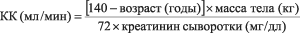

|
 |
| ЗОДАК® ЭКСПРЕСС (ZODAC® EXPRESS) levocetirizine таб., покр. пленочной оболочкой | ||||||||||||||||||||
|
Клинико-фармакологическая группа: Блокатор гистаминовых Н1-рецепторов. Противоаллергический препарат Номер и дата регистрации: ЛП-002216 от 03.09.13 Код ATX: R06AE09 |
Владелец регистрационного удостоверения: зарегистрировано Представительство: | |||||||||||||||||||
Форма выпуска, состав и упаковка ◊ Таблетки, покрытые пленочной оболочкой белого или почти белого цвета, продолговатые, двояковыпуклые, с гравировкой "е" на одной стороне.
Вспомогательные вещества: лактозы моногидрат, целлюлоза микрокристаллическая, карбоксиметилкрахмал натрия, кремния диоксид коллоидный, магния стеарат. Состав пленочной оболочки: гипромеллоза 2910/5, макрогол 6000, тальк, титана диоксид (E171). 7 шт. - блистеры (1) - пачки картонные. | ||||||||||||||||||||
Описание препарата основано на официально утвержденной инструкции по применению и утверждено компанией-производителем для издания 2020 г. | ||||||||||||||||||||
Фармакологическое действие |
Фармакокинетика |
Показания |
Режим дозирования |
Побочное действие |
Противопоказания |
Беременность и лактация |
Особые указания |
Передозировка |
Лекарственное взаимодействие |
Условия хранения и сроки годности |
Условия реализации
Фармакологическое действие
Левоцетиризин, (R)-энантиомер цетиризина, блокатор гистаминовых Н1-рецепторов. Левоцетиризин оказывает влияние на гистаминозависимую стадию аллергических реакций; уменьшает миграцию эозинофилов, уменьшает проницаемость сосудов, ограничивает высвобождение медиаторов воспаления. Левоцетиризин предупреждает развитие и облегчает течение аллергических реакций, оказывает антиэкссудативное, противозудное действие; практически не оказывает антихолинергического и антисеротонинового действия. В терапевтических дозах практически не оказывает седативного действия. После приема внутрь противоаллергическое действие левоцетиризина продолжается в течение 24 ч. Фармакокинетика
Фармакокинетика носит линейный характер, не зависит от дозы и времени и незначительно варьирует у разных людей. Всасывание После приема внутрь левоцетиризин быстро и полностью всасывается из ЖКТ. Прием пищи не влияет на полноту абсорбции, хотя скорость ее снижается. У взрослых после однократного приема препарата в терапевтической дозе (5 мг) Cmax в плазме достигается через 0.9 ч и составляет 270 нг/мл, а после повторного приема в дозе 5 мг - 308 нг/мл. Css достигается через 2 суток. Распределение Связывание левоцетиризина с белками плазмы составляет 90%. Vd составляет 0.4 л/кг. Биодоступность составляет 100%. Метаболизм Левоцетиризин метаболизируется в небольших количествах (<14%) в организме путем N- и O-деалкилирования (в отличие от других антагонистов гистаминовых H1-рецепторов, которые метаболизируются при участии изоферментов CYP) с образованием фармакологически неактивного метаболита. Благодаря ограниченному метаболизму и отсутствию метаболической ингибирующей активности, взаимодействие левоцетиризина на уровне метаболизма с другими веществами маловероятно. Выведение T1/2 у взрослых составляет 7.9±1.9 ч. Средний наблюдаемый общий клиренс - 0.63 мл/мин/кг. Левоцетиризин преимущественно выводится с мочой, в среднем, около 85.4% принятой дозы путем клубочковой фильтрации и канальцевой секреции. Выведение через кишечник (с калом) составляет только 12.9% принятой дозы. Фармакокинетика у особых групп пациентов Пациенты с почечной недостаточностью. У пациентов с почечной недостаточностью (КК < 40 мл/мин) клиренс препарата уменьшается, а Т1/2 удлиняется (так, у больных, находящихся на гемодиализе, общий клиренс снижается на 80%), что требует соответствующего изменения режима дозирования. Менее 10% левоцетиризина удаляется в ходе стандартной 4-часовой процедуры гемодиализа. Дети. T1/2 у детей младшего возраста короче, чем у взрослых. Данные по исследованию фармакокинетики препарата у 14 детей в возрасте от 6 до 11 лет с массой тела от 20 до 40 кг при пероральном приеме однократно 5 мг левоцетиризина показали, что показатели Cmax и AUC примерно в 2 раза превышают аналогичные показатели у взрослых здоровых людей при перекрестном контроле. Средний показатель Cmax составил 450 нг/мл, Cmax достигалась в среднем через 1.2 ч, общий клиренс с учетом массы тела был на 30% выше, а период полувыведения на 24% короче у детей, чем соответствующие показатели у взрослых. Ретроспективный фармакокинетический анализ проведен у 324 пациентов (у детей в возрасте от 1 до 11 лет и взрослых в возрасте от 18 до 55 лет), получавших одну или несколько доз левоцетиризина от 1.25 мг до 30 мг. Данные, полученные в ходе анализа, показали, что прием препарата в дозе 1.25 мг у детей в возрасте до 5 лет приводит к концентрации в плазме, соответствующей таковой у взрослых при приеме 5 мг препарата 1 раз/сут. Пациенты пожилого возраста. Данные по фармакокинетике у пожилых пациентов ограничены. При повторном приеме 30 мг левоцетиризина 1 раз/сут в течение 6 дней у пожилых пациентов (возраст от 65 до 74 лет) общий клиренс был приблизительно на 33% ниже, чем таковой у взрослых более молодого возраста. Было показано, что распределение рацемата цетиризина больше зависит от функции почек, чем от возраста. Это утверждение также может быть применимо и к левоцетиризину, т.к. оба препарата и левоцетиризин, и цетиризин выводятся преимущественно с мочой. Поэтому у пожилых пациентов требуется коррекция дозы левоцетиризина в зависимости от функции почек. Показания
Режим дозирования
Таблетку следует принимать внутрь, не разжевывая и запивая жидкостью, независимо от приема пищи. Рекомендуется принимать суточную дозу в один прием. Взрослые, подростки и дети старше 6 лет Рекомендуемая суточная доза составляет 5 мг (1 таблетка). Если после лечения улучшения не наступает или появляются новые симптомы, необходимо проконсультироваться с врачом. Препарат следует применять только согласно тому способу применения и в тех дозах, которые указаны в инструкции. В случае необходимости следует проконсультироваться с врачом перед применением лекарственного препарата. Пациенты пожилого возраста У пожилых пациентов с умеренной и тяжелой почечной недостаточностью рекомендуется коррекция дозы (см. "Пациенты с нарушением функции почек" ниже). Пациенты с нарушением функции почек Интервал между приемами препарата определяют индивидуально с учетом функции почек. Информация о коррекции дозы приведена в таблице ниже. Для ее использования следует рассчитать КК (мл/мин) на основании концентрации креатинина в сыворотке (мг/дл). КК для мужчин можно рассчитать, исходя из концентрации сывороточного креатинина, по следующей формуле:  КК для женщин можно рассчитать, умножив полученное значение на коэффициент 0.85. Коррекция дозы у пациентов с нарушением функции почек
У детей с нарушением функции почек дозу корректируют индивидуально с учетом КК и массы тела. Отдельных данных по применению у детей с нарушением функции почек нет. При изолированном нарушении функции печени коррекции дозы не требуется. Взрослым пациентам с нарушением функции печени и почек дозирование осуществляют согласно таблице, приведенной выше. Продолжительность лечения При лечении сезонного (интермиттирующего) ринита (наличие симптомов менее 4 дней в неделю или их общая продолжительность менее 4 недель) продолжительность лечения зависит от длительности симптоматики; лечение может быть прекращено при исчезновении симптомов и возобновлено при появлении симптомов. При лечении круглогодичного (персистирующего) аллергического ринита (наличие симптомов более 4 дней в неделю и их общая продолжительность более 4 недель лечение может продолжаться в течение всего периода воздействия аллергенов. Имеется клинический опыт непрерывного применения левоцетиризина в лекарственной форме таблетки покрытые пленочной оболочкой 5 мг у взрослых пациентов длительностью до 6 месяцев. Если пациент принимает или недавно принимал другие препараты, он должен сообщить об этом лечащему врачу. В случае пропуска приема препарата Зодак® Экспресс, не следует принимать двойную дозу для компенсации пропущенной, следующую дозу необходимо принять в обычное время. Побочное действие
Определение частоты побочных реакций (в соответствии с данными ВОЗ): очень часто (≥1/10), часто (≥1/100, <1/10), нечасто (≥1/1000, <1/100), редко (≥1/10 000, <1/1000), очень редко (< 1/10 000), частота неизвестна (частоту возникновения побочного эффекта нельзя определить на основании имеющихся данных). Клинические исследования Во время проведения клинических исследований у мужчин и женщин 12-71 лет наиболее часто встречались следующие побочные реакции: головная боль, сонливость, сухость во рту, утомляемость, нечасто - астения и боль в животе. Во время проведения клинических исследований у детей в возрасте от 6 до 12 лет наиболее часто встречались головная боль и сонливость. Пострегистрационные исследования В период пострегистрационного применения препарата наблюдались следующие побочные эффекты, частота которых неизвестна. Со стороны иммунной системы: реакции гиперчувствительности, в т.ч. анафилактические реакции. Нарушения психики: тревога, агрессивность, ажитация, галлюцинации, депрессия, бессонница, суицидальные мысли. Со стороны нервной системы: судороги, тромбоз синусов твердой мозговой оболочки, парестезия, головокружение, обморок, тремор, дисгевзия. Со стороны обмена веществ и питания: повышенный аппетит. Стороны органа слуха и лабиринтные нарушения: вертиго. Со стороны органа зрения: нарушение зрения, нечеткость зрительного восприятия, воспалительные проявления, непроизвольные движения глазных яблок (нистагм). Со стороны сердечно-сосудистой системы: стенокардия, ощущение сердцебиения, тахикардия, тромбоз яремной вены. Со стороны дыхательной системы: одышка, усиление симптомов ринита. Со стороны пищеварительной системы: тошнота, рвота, диарея, гепатит. Со стороны мочевыделительной системы: дизурия, задержка мочи. Со стороны кожи и подкожных тканей: ангионевротический отек, кожный зуд, кожная сыпь, стойкая лекарственная эритема, крапивница, гипотрихоз, трещины, фотосенсибилизация. Со стороны костно-мышечной системы: миалгия, артралгия. Общие реакции: периферические отеки, сухость слизистых оболочек. Со стороны лабораторных показателей и результатов инструментальных исследований: отклонение от нормы показателей функции печени, увеличение массы тела, перекрестная реактивность. Если любые из указанных побочных эффектов усугубляются или отмечаются любые другие побочные эффекты, не указанные в инструкции, следует сообщить об этом врачу. Противопоказания
С осторожностью:
Применение при беременности и кормлении грудью
Беременность Данные по применению левоцетиризина во время беременности практически отсутствуют или ограничены (менее 300 исходов беременностей). Однако применение цетиризина, рацемата левоцетиризина, при беременности (более 1000 исходов беременностей) не сопровождалось пороками развития и внутриутробным и неонатальным токсическим воздействием. В исследованиях на животных не выявлено прямого или косвенного неблагоприятного влияния на течение беременности, эмбриональное и фетальное развитие, роды и постнатальное развитие. При назначении левоцетиризина беременным следует соблюдать осторожность. Период грудного вскармливания Цетиризин, рацемат левоцетиризина, экскретируется с грудным молоком. Поэтому также вероятно и выделение левоцетиризина с грудным молоком. У детей, находящихся на грудном вскармливании, возможно появление побочных реакций на левоцетиризин. Поэтому необходимо соблюдать осторожность при назначении левоцетиризина в период грудного вскармливания. Фертильность Клинические данные по левоцетиризину отсутствуют. Особые указания
Пациентам с почечной недостаточностью умеренной степени тяжести и тяжелой почечной недостаточностью рекомендуется увеличение интервалов между приемами препарата Зодак® Экспресс в соответствии с показателем КК. При применении препарата Зодак® Экспресс у пациентов с повреждением спинного мозга, гиперплазией предстательной железы, а также при наличии других предрасполагающих факторов к задержке мочи требуется соблюдение осторожности, т.к. левоцетиризин может увеличивать риск развития задержки мочи. При применении препарата Зодак® Экспресс у пациентов с эпилепсией и у пациентов с риском возникновения судорог требуется соблюдение осторожности, поскольку левоцетиризин может вызывать развитие судорожного синдрома. Во время применения препарата Зодак® Экспресс пациентам рекомендуется воздержаться от употребления алкогольных напитков. В состав продукта входит лактозы моногидрат; пациентам с редкими наследственными заболеваниями, сопровождающимися непереносимостью галактозы, дефицитом лактазы (дефицит лактазы lapp), или при синдроме мальабсорбции глюкозы/галактозы противопоказано применение данного лекарственного препарата. Информация для пациента Внимательно прочтите инструкцию перед тем, как начать применение препарата. Сохраните инструкцию, она может понадобиться вновь. Если у Вас возникли вопросы, обратитесь к врачу. Лекарственный препарат, которым Вы лечитесь предназначен лично Вам, и его не следует передавать другим лицам, поскольку оно может причинить им вред даже при наличии тех же симптомов, что и у Вас. Использование в педиатрии Применение препарата в форме таблеток, покрытых пленочной оболочкой, не рекомендуется у детей в возрасте менее 6 лет, т.к. эта лекарственная форма не обеспечивает возможности коррекции дозы. Влияние на способность к управлению транспортными средствами и механизмами Левоцетиризин может привести к повышенной сонливости, следовательно, он может оказывать влияние на способность управлять автомобилем или работать с техникой. В период лечения необходимо воздерживаться от занятий потенциально опасными видами деятельности, требующими повышенной концентрации внимания и быстроты психомоторных реакций. Передозировка
Симптомы: возможны сонливость у взрослых и возбуждение, а также беспокойство, сменяющиеся сонливостью, у детей. Лечение: специфических антидотов левоцетиризина нет. В случае передозировки рекомендуется симптоматическое или поддерживающее лечение. Если после приема препарата прошло немного времени, следует провести промывание желудка. Левоцетиризин практически не выводится при гемодиализе. Лекарственное взаимодействие
Изучение взаимодействия левоцетиризина с другими лекарственными препаратами, включая исследования с индукторами изофермента CYP3A4, не проводилось. При изучении лекарственного взаимодействия рацемата цетиризина с псевдоэфедрином, циметидином, кетоконазолом, эритромицином, азитромицином, глипизидом и диазепамом клинически значимого нежелательного взаимодействия не выявлено. При одновременном назначении с теофиллином (400 мг/сут) общий клиренс цетиризина снижается на 16% (кинетика теофиллина не меняется). В исследовании при одновременном приеме ритонавира (600 мг 2 раза/сут) и цетиризина (10 мг/сут) показано, что экспозиция цетиризина увеличивалась на 40%, а экспозиция ритонавира незначительно изменялась (-11%). В ряде случаев при одновременном применении левоцетиризина с алкоголем или лекарственными препаратами, оказывающими угнетающее влияние на ЦНС, возможно усиление их влияния на ЦНС, хотя не доказано, что рацемат цетиризина потенцирует эффект алкоголя. |
||||||||||||||||||||
Вернуться наверх |
||||||||||||||||||||
Copyright © Справочник Видаль «Лекарственные препараты в России», Москва, Россия